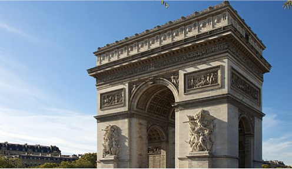
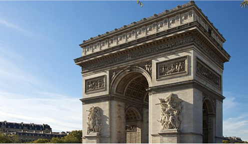

Local Food
A macaron or French macaroon is a sweet meringue-based confection made with egg white, icing sugar, granulated sugar, almond meal, and food colouring.
A crêpe or crepe is a very thin type of pancake. Crêpes are usually one of two varieties: sweet crêpes or savoury galettes. They are often served with a wide variety of fillings such as cheese, jam, or hazelnut cocoa spread.
Tourist Destinations
 

The Eiffel Tower is a wrought-iron lattice tower on the Champ de Mars in Paris, France. It is named after the engineer Gustave Eiffel, whose company designed and built the tower.
The Arc de Triomphe de l'Étoile is one of the most famous monuments in Paris, France, standing at the western end of the Champs-Élysées at the centre of Place Charles de Gaulle, formerly named Place de l'Étoile—the étoile or "star" of the juncture formed by its twelve radiating avenues.
Activities
The Palace of Versailles is a former royal residence built by King Louis XIV located in Versailles, about 12 miles west of Paris, France.
The Louvre, or the Louvre Museum, is the world's most-visited museum, and an historic landmark in Paris, France. It is the home of some of the best-known works of art, including the Mona Lisa and the Venus de Milo.
Fun Facts
France is the most visited country in the world
France is smaller than Texas
France produces 1,500 types of cheese
Demographics
Catholicism (47%)
Protestantism (2%)
Eastern Orthodoxy (1%)
No religion (33%)
Islam (4%)
Buddhism (2%)
Judaism (1%)
Other religions (1%)
Map